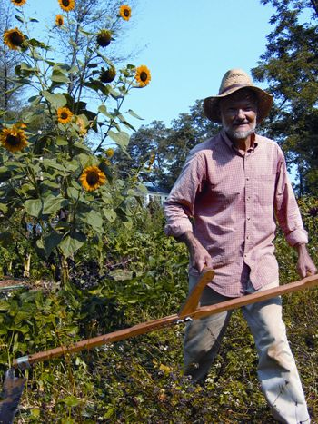
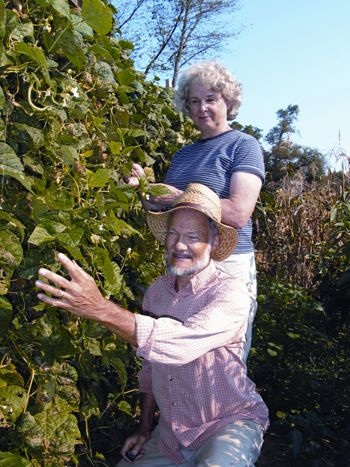
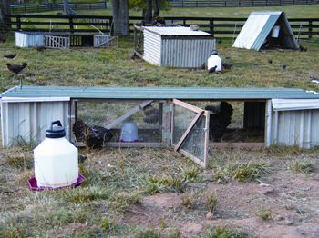
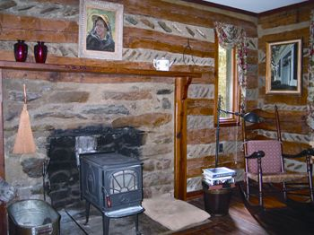
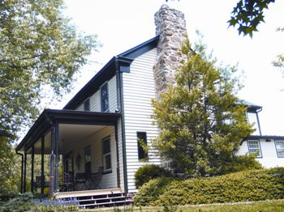
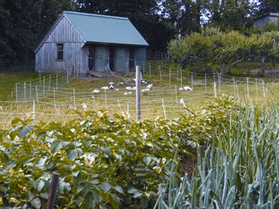
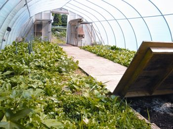
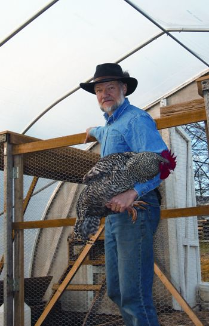

Ellen and I met at a Zen monastery in the Catskill Mountains of New York state more than two decades ago. The initial spark of interest flared into true love when we discovered a mutual passion for compost.
That statement is not as silly as it may sound. We both had left behind failed marriages, and were pessimistic about ever finding love, much less marriage, again. But what better metaphor for a new life together than compost? What we both needed was renewal, to transform what was past into something new and vital. We began to dream of finding a place where we could compost, garden and make a new life together.
We got married and soon found our own bit of Eden: two and a half acres of pretty good dirt in a crossroads rural village in northern Virginia, within sight of the Blue Ridge Mountains. The farmhouse was nearly 200 years old, and it began as a two-room log cabin, before previous owners began adding on. We decided to call this homestead “Boxwood,” after the large rectangle of mature boxwood trees that grace the front of the property and provide privacy from the road.
Our goal in moving to our homestead was to become more self-sufficient, and every year we saw an increase in the amount of food we raised ourselves or purchased from local growers. I’m now 62 and retired from the Postal Service. Since retiring, I have more time for gardening (we garden about 7,000 square feet, and manage one acre of pasture) but my current efforts at homestead food production are simply an extension of a way of life Ellen and I chose when we first moved to our homestead.
Our goal has always been to eat fresh, 12 months of the year. We don’t do much home processing, which is labor intensive. We do a little freezing, but almost no canning. Instead, we grow many crops that naturally store well, such as winter squash, potatoes, sweet potatoes, carrots and cabbages.
When we started our garden, the first challenge was coaxing plants to grow in our native clay soil. Over the years, it has been a revelation to learn that, given the right soil amendments, clay is actually among the most fertile of all soil types.
We soon found that liming our soil helped loosen it, because lime causes the almost microscopic clay particles to “flocculate,” or cling together in clumps, creating a looser soil with larger particles. Another key to success with clay, or indeed any soil type, is adding massive quantities of organic matter - as much as you can manage, from every available source in every season. With these additions, our intractable clay has mellowed over the years into a deep, rich loam.
We’ve built our share of compost heaps, recycling every last bit of organic refuse, as well as hauling in manure, a great source of nitrogen, from a neighbor’s horses. But we have sought less labor-intensive alternatives to the compost heap as well. I plant cover crops every chance I get - crops such as buckwheat and clover that add nutrients and organic matter to the soil. We’ve also experimented with vermicomposting: feeding organic matter to earthworms, which transform it into a potent natural fertilizer, full of nitrogen, phosphorus and beneficial microbes. We started small, but last year, we expanded into almost 300 square feet of bins. We plan to use earthworm castings as a major part of our garden fertility program.
We are seeking greater dependence on our own resources instead of buying soil amendments, so I am also planting “fertility patches,” which are plants grown specifically to be cut for use in mulches and compost heaps. One of the best plants for a fertility patch is comfrey. Comfrey is as high in nitrogen as horse manure, and it’s a “dynamic accumulator” - that is, its roots reach into the deep subsoil, “mining” the minerals that aren’t available to more shallow-rooted crops. I see more and more opportunities for planting this valuable crop - along the borders of the property and garden, next to perennial plantings and under the fruit trees in the orchard.
Poultry are among the easiest of all livestock, and I recommend them to beginning homesteaders. Even a small flock of laying hens will keep the family supplied with the best eggs they’ve ever eaten, for much of the year. Ever since our first summer here, we have maintained a large, mixed flock of poultry - chickens of many breeds, ducks, geese and a few guineas. Like many people who keep poultry, we started out with a conventional small coop with a small, immobile chicken run. Early on we concluded that this model is problematic for the birds’ health, because within a week the chicken run is denuded of every blade of grass and looks like the surface of the moon. We now keep all the birds on pasture through the entire growing season using electric net fencing, which has become a fundamental management tool for me. It’s portable, allows the birds to free-range within the limits I set and protects them from predators.
Our poultry are a key part of our domestic economy. We produce all the eggs and poultry we eat year-round (and we eat a lot of both). Ellen renders the duck and goose fat, to yield one of the highest quality of all cooking fats. The old birds are culled to the stockpot for rich, nutritious broth - we have some every day.
The usefulness of our flocks goes well beyond the table, however. Using electric net fencing, I put the chickens on the garden before the beginning of the season to clear the area of slugs. I also use “chicken power” to till in cover crops, in lieu of a power tiller. The chickens - who love nothing so much as scratching - will quickly “till” the ground in any small space.
For example, last summer and fall I put 18 chickens on a plot I wanted to develop as garden space. After five weeks or so, they had destroyed the existing pasture sod. Moving the chickens elsewhere, I sowed a mixed cover of peas, buckwheat and crucifers, and allowed it to grow five weeks before reintroducing the birds to the pasture for a second “tilling.” I also use guineas, confined to the winter squash plot with electric fencing, for 100 percent organic, 100 percent effective control of squash bugs.
The acre or so of pasture on our property was initially a weed-grown nightmare. However, since we’ve started keeping poultry, we have come to see it as a priceless resource, providing our flocks with food of a quality I couldn’t hope to match with anything purchased: green growing plants, wild seeds and animal foods such as earthworms and insects. The keys to pasture management for us are grazing by the poultry flocks, mowing in summer to prevent too heavy a set of weed seeds, and overseeding with mixed grasses and clovers, either in fall or late winter/early spring (or both). The pasture is also a fertility patch par excellence. I cut the grass with a scythe (see photo in Image Gallery) when it is lush and growing fast in the spring, and compost this nutrient-rich material or use it as mulch.
A top priority in our first year at Boxwood was planting apple and pear trees, and we’ve steadily added to the orchard as we’ve become enthusiastic about various fruits. We now grow apples (six varieties), pears (four), plums (three), cherries (four), Oriental persimmons (three), blueberries (nine), blackberries and raspberries (eight), plus papaws and white mulberry.
One of my greatest regrets is that I didn’t plant nut trees early on, because some species can take 10 or more years to produce a crop! I am finally correcting that error, having just planted eight filberts (hazelnuts). This year and next I will plant hickory and black walnut, as well as pecan, heartnut, chestnut and Korean stone pine (a source of edible pine nuts).
For years, we have grown shiitake mushrooms, whose cultivation is as easy as it is fun, but I am starting to give mushrooms a much larger scope on our homestead by using them to hasten the decomposition of felled trees into forest-floor humus. Ailanthus (also called “tree of heaven”) is a major weed species in our area, with wood that is not dense enough to make good firewood. My next thinning of these weed trees in our small woodlot will be done with a chain saw lubricated not with petroleum oil, but with vegetable oil carrying millions of spores of Pleurotus ostreatus (oyster mushrooms). Every cut of the saw will inoculate the trunk, slash and stump with spores. In due time, and with the blessing of the rains, this practice will yield delicious mushrooms for the table, and the mushrooms will also help to break down the wood from the fallen trees.
Last year, we discovered the concept of the “forest garden,” and already have made a modest start creating one at Boxwood. A natural forest typically consists of three layers: a canopy layer of tall trees that need the full light of the sun; a shrub layer that thrives in the partial shade of the canopy; and a mostly perennial herbaceous layer that also does well in the shade of the other layers. With judicious species selection, we hope to mimic this natural forest structure, and develop a forest garden more productive than it would be if planted solely as a vegetable garden, orchard or woodlot.
Not all the species we plan to cultivate in our forest garden are intended to produce food for us. Some will help improve the fertility of our soil by adding vital nutrients. Others will serve as food and habitat for beneficial insects, which help keep insect threats to the forest garden in check. As a first step, I have heavily mulched our orchard to kill the existing sod, and have begun interplanting the established fruit trees with a shrub layer of gooseberries, currants, jujube, elderberry and other plants.
A lawn is too often a huge net loss of time and labor for the homesteader, producing little to show for all the effort expended. Last year, we adopted two strategies to reclaim our lawn as a productive asset. Using electric net fencing, I began rotating our ducks and geese over five areas of lawn, now termed our “close-in pastures.” Both species are grazers, and mine did a great job of turning all that lovely grass into nutritious meals.
I have also converted part of our former front lawn to a mini-forest garden. Again, I laid down a heavy, killing mulch in a generous arc around three established kaki (oriental) persimmons, then interplanted filberts, gooseberries and currants. I love the change, and no longer have to be so meticulous about cutting the grass around the trees.
Our first greenhouse was a homemade, 12-by-20-foot structure that we built based on ideas in Eliot Coleman’s book Four-Season Harvest. When it succumbed to winter’s assaults six years ago, we bought a kit and built a new, 20-by-48-foot hoophouse. In this new greenhouse we grow salads and cooking greens right through the dead of winter (Zone 6b). I also grow green forage - grain, grasses and mixed crucifers - for the poultry in the winter.
When I built our new worm bins, I installed them right in the greenhouse, so the worms stay warm, and our vermicomposting continues uninterrupted through the winter. Last fall, I also installed a couple of pens in the north end of the greenhouse for chickens. During the winter, the pens housed a couple of flocks of about a dozen birds each. Though I have not tried to measure it, I believe their body heat helped moderate the temperature in the greenhouse overnight. Their exhalations also boosted to some degree the carbon dioxide levels in the greenhouse, a benefit to the growing plants.
We are seeing a growing interest in the homesteading life, and we do what we can to encourage it. We serve as local chapter leaders for the Weston A. Price Foundation, a nonprofit organization that promotes healthful foods. We also maintain a food resource list to help local consumers find small producers of high-quality food in our area. We are doing an increasing amount of public speaking, writing, and other forms of education on homesteading and food quality issues. I offer classes on starting and managing the homestead poultry flock, and hands-on workshops on poultry butchering.
We offer our homestead as an inspiration to others who have concluded that a personal investment in homesteading skills is a wise investment indeed. Would-be homesteaders visit with increasing frequency to see our place and the methods we are using. The following are some of the key points we try to emphasize to our visitors.
It’s a great way to eat. Perhaps you’ve seen that T-shirt with the slogan: “My tastes are simple - I like the best.” That sums it up for Ellen and me. Not, however, with regard to car, home furnishings or stereo equipment - for such things our tastes are quite modest. But where food is concerned, we think that second-best isn’t good enough. The story of our life at Boxwood has been the story of an increasing unwillingness to compromise on food quality, and an increasingly radical rejection of the mass-produced, highly refined food available on the industrial market. Even the U.S. Department of Agriculture - foremost proponent of the superiority of the American diet - recognizes that the nutritional content of our food has been declining for decades. I estimate that 85 percent of the food we eat is produced in our back yard or purchased face-to-face from local small farmers we know personally.
It makes us more self-reliant. Our country’s complex, energy-intensive agricultural and food distribution system is vulnerable to any fuel shortage or other economic crisis that comes along, whether caused by high levels of national and personal debt, global climate change, heavy dependence on oil and natural gas, or exploding population levels. Nothing makes more sense than to become less dependent on this system by producing more of our own food and seeking out sources of high-quality food close to home, as well as assisting others in learning these important skills.
It’s a great way to live. Ultimately, Ellen and I choose to be more self-reliant through homesteading because it’s a rewarding way of life - productive, challenging and creative. It engages us in the dance of the seasons, and with the whole web of life.
It has been observed that “you are what you eat,” but I’m increasingly certain as well that “you are where you eat.” If you work your piece of ground with a nurturing and grateful attitude, you will become more attuned to the spirit of your homestead and its place in the world. Good luck!
The Encyclopedia of Country Living by Carla Emery
The Have-More Plan by Ed and Carolyn Robinson
The Good Life by Helen and Scott Nearing
All available at Mother Earth Shopping.
- Harvey Ussery is author of several articles on 21st century homesteading for Mother Earth News.
|
 COURTESY HARVEY & ELLEN USSERY Harvey Ussery uses a scythe in his garden. |
 COURTESY HARVEY & ELLEN USSERY Harvey and Ellen Ussery grow most of their own food on a two-and-a-half-acre homestead. |
 COURTESY HARVEY & ELLEN USSERY These chickens are raised on pasture, with plenty of access to fresh air and sunshine. This method of raising poultry produces healthier birds and more nutritious eggs. |
|
 COURTESY HARVEY & ELLEN USSERY Inside the Usserys' home. |
 COURTESY HARVEY & ELLEN USSERY Over the past 200 years, the Usserys' home has been expanded from the original two-room cabin to this large, comfortable farmhouse. |
 COURTESY HARVEY & ELLEN USSERY Deluxe poultry housing and pasture on the Ussery homestead. |
|
 COURTESY HARVEY & ELLEN USSERY This unique greenhouse path also includes space underneath for worm composting bins. |
 COURTESY HARVEY & ELLEN USSERY The greenhouse is a comfortable winter home for poultry. |
|